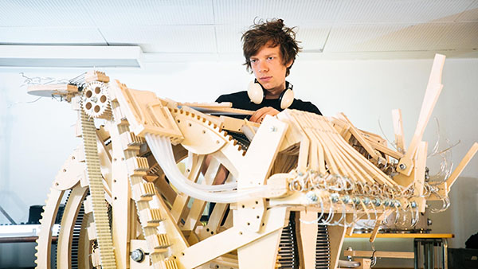

Wintergatan (Swedish pronunciation: [ˈvɪ̂nːtɛrˌɡɑːtan], "the Milky Way", lit. '"the Winter Street"') is a Swedish folktronica band from Gothenburg. Martin Molin and Marcus Sjöberg were previously part of the former band Detektivbyrån. The band uses a variety of unconventional instruments including the Modulin, a fingerboard-controlled synthesizer built from Doepfer eurorack modules, the Moog Theremini digital theremin, an electric autoharp, a hammered dulcimer, a self-built punch-card music box, a slide projector, a musical saw, and a typewriter for use as percussion. The band's members all play various instruments, but have primary specializations. Martin Molin specializes in the vibraphone as well as the electronic instruments that define Wintergatan's sound; Evelina Hägglund specializes in keyboard instruments; David Zandén specializes in bass; and Marcus Sjöberg specializes in drums. The band released their first track in late 2012, titled Sommarfågel, and released their debut album Wintergatan in 2013. The band toured with the album around Sweden in 2014 and 2016; Julia Jonas substituted for Evelina Hägglund during some 2014 performances.
In 2016 the band's lead member Martin Molin created a marble machine musical instrument and uploaded a performance to youtube. The video currently has nearly 200 million views. The Wintergatan Marble Machine is almost incomprehensibly complicated. There’s a violin strapped to gears that connect to rotating belts that carry marbles that drop onto xylophone keys and then fall into funnels, all to go back through the machinery and get spit out again. Martin says, he was so determined to make marbles drop out one at a time (instead of two or three at a time), that he scrapped six months' worth of work and began iterating on his design. Martin began work on the marble machine in August 2014 and hoped to spend about two months on the project. Its complexity soon spiraled out of control as all 3,000 internal parts had to be designed and fabricated by hand, a time-consuming process that eventually took 14 months. An early version was designed using 3D software, but it was easier to create parts on the fly leading to it’s Frankenstein appearance. The band shared much the progress in regular video updates on YouTube.
Starting in 2017 Martin started the still ongoing process of creating an updated version of the machine called the "Marble Machine X". The goal of this project is to create a machine robust enough to record an album and go on a world tour. This version of the machine is exponentially more complicated that the previous iteration, it is much larger, there are more instruments and and the design challenges presented by preparing for a world tour are immense. Martin is chronicling the design and manufacturing process of the machine on the Wintergartan youtube channel. The channel is very successful with over 2 million subscribers. the weekly update vlogs average over 300 thousand views and sometimes reach into the millions. There is also an active community of people on Discord that collborate with Martin to find and test the best design solutions for the machine. There are over 160 build update videos on the channel. The project has faced many delays and setbacks throughout the devlopment process, but the band is hopeful that the machine will be completed sometime this year with the world tour taking place next year.